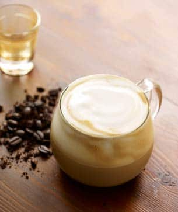

Nyan Cat
From Wikipedia, the free encyclopedia
Nyan Cat
Nyan Cat is the name of a YouTube video, uploaded in April 2011, which became an Internet meme. The video merged a Japanese pop song with an animated cartoon cat with a Pop-Tart for a body, flying through space, and leaving a rainbow trail behind it. The video ranked at number 5 on the list of most viewed YouTube videos in 2011.

Starbucks
Cappuccino
Dark, rich espresso lies in wait under a smoothed and stretched layer of thick foam. It's truly the height of our baristas' craft.
Ingredients
Milk, Brewed Espresso.
We cannot guarantee that any of our products are free from allergens (including dairy, eggs, soy, tree nuts, wheat and others) as we use shared equipment to store, prepare and serve them.
